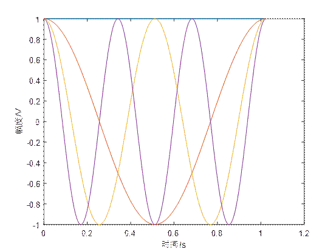
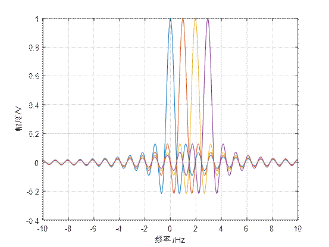

OFDM时频图
1 | % ======================== 绘制时域波形图======================= |
绘制时域波形图
- 定义采样率
Fs、子载波数N、信号周期T、时间向量x、子载波数量Numscr、初始相位s_data。 - 初始化一个矩阵
y来存储每个子载波的复数值，以及一个初始相位向量ini_phase。 - 使用双重循环计算每个子载波在每个时间点的复数值。外循环遍历子载波数量，内循环遍历时间序列。计算公式为
y(k+1, n+1) = ini_phase(n+1) * exp(1i * 2 * pi * k * n / N)。 - 使用
plot函数绘制时域波形，x轴为时间s，y轴为幅度V。

绘制频域波形图
- 定义频率向量
f，扩展因子a，并初始化一个更大的矩阵y1来扩展y矩阵。 - 使用
horzcat函数水平拼接y和y1矩阵，得到y_combined。 - 重新定义频率向量
f以匹配扩展后的矩阵。 - 初始化一个矩阵
y_fft来存储每个子载波的频谱。 - 使用循环计算每个子载波的频谱，通过对
y_combined的每一行应用fft函数，然后使用fftshift函数进行频谱移位，并除以N进行归一化。 - 使用
plot函数绘制频域波形图，x轴为频率Hz，y轴为幅度V。限制x轴范围在-10到10之间。

总结
生成特定的时间序列和相应的复数值，来模拟和绘制四个子载波的时域波形。然后，通过对这些波形进行傅里叶变换，绘制出它们的频域波形图。
本博客所有文章除特别声明外，均采用 CC BY-NC-SA 4.0 许可协议。转载请注明来自 NULL！